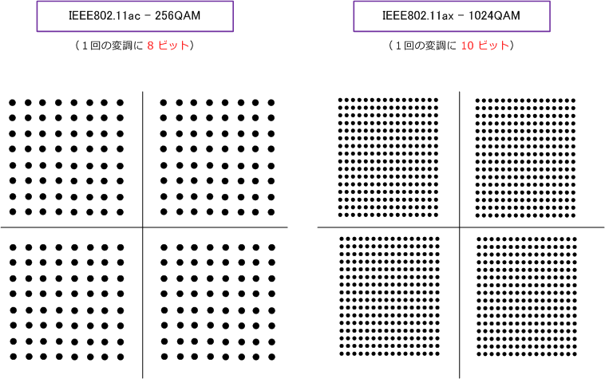
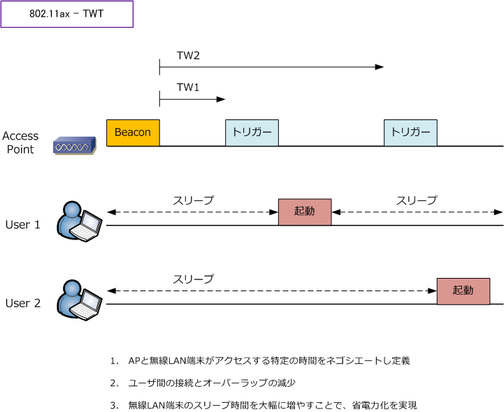
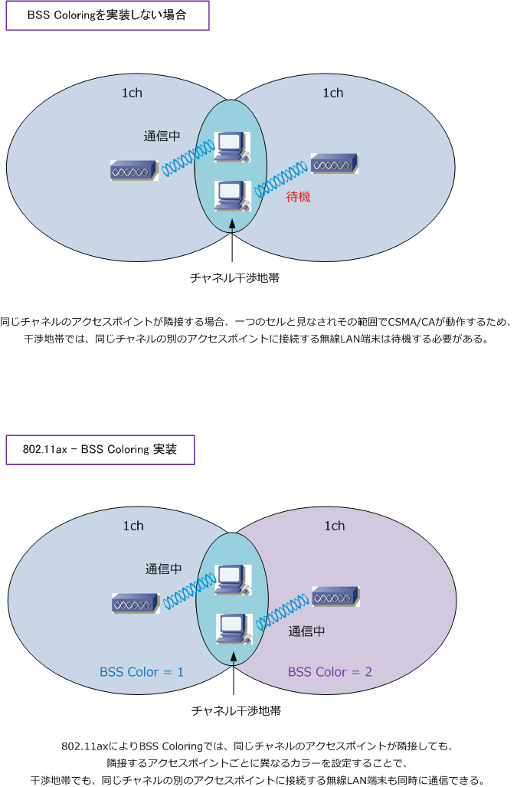
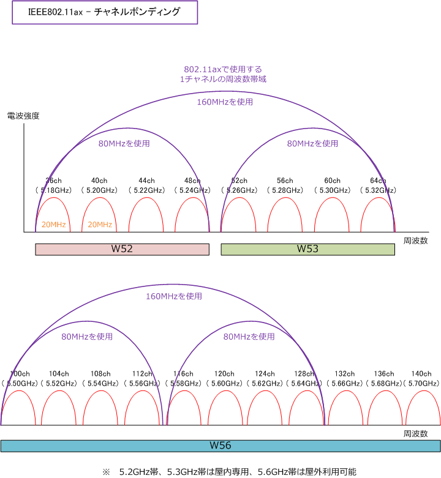
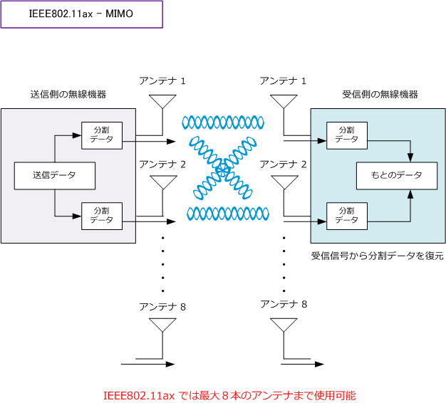
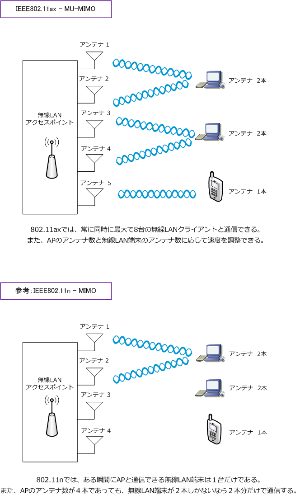

802.11ax - Wi-Fi 6 / Wi-Fi 6E
IEEE802.11axとは
IEEE802.11axは、理論上9.6Gbpsの超高速通信が可能な第6世代（Wi-Fi 6）の最新の無線LAN規格です。 802.11axでは、スタジアムのような無線LAN端末が密集するような場所でもスループット低下を改善する 技術が盛り込まれています。また、802.11axでは、混雑した環境でも快適な通信を実現することを目標と したこともあり、5GHz帯だけでなく2.4GHz帯を電波に使用することができます。
無線LAN規格のIEEE802.11axには、Wi-Fi 6の拡張版の認証規格「Wi-Fi 6E」があります。Wi-Fi 6Eでは 2.4GHz帯/5GHz帯に加えて6GHz帯の周波数を使用できるので、無線LAN通信の混雑や電波干渉の少ない 快適なWi-Fi通信を実現することができます。Wi-Fi 6とWi-Fi 6Eとの違いは6GHz帯を使用できるかどうか であり、理論上の最大通信速度、無線アクセス方式、変調方式など基本的な仕様は同じです。
| 規格名 | Wi-Fiアライアンス名称 | 策定時期 | 使用する周波数帯 | 理論上の最大通信速度 |
|---|---|---|---|---|
| IEEE802.11b | - | 1999年 | 2.4GHz | 11Mbps |
| IEEE802.11a | - | 1999年 | 5GHz | 54Mbps |
| IEEE802.11g | - | 2003年 | 2.4GHz | 54Mbps |
| IEEE802.11n | Wi-Fi 4 | 2009年 | 2.4GHz / 5GHz | 600Mbps |
| IEEE802.11ac | Wi-Fi 5 | 2013年 | 5GHz | 6.9Gbps |
| IEEE802.11ax | Wi-Fi 6 | 2019年 | 2.4GHz / 5GHz | 9.6Gbps |
| IEEE802.11ax | Wi-Fi 6E | 2021年 | 2.4GHz / 5GHz / 6GHz | 9.6Gbps |
802.11axと802.11acの違い
802.11axは802.11acの後継であり、802.11axもMIMOに対応しています。MIMOは複数のアンテナを 使用してデータを同時に伝送させる技術です。802.11acと同様、最大8本のアンテナを同時に使用して データを8ストリームで伝送できます。また、MU-MIMOにも対応していますが、802.11acは最大4台の 無線LAN端末との同時通信が可能でしたが、802.11axでは最大8台との同時通信が可能となりました。 さらに、変調方式の最大は802.11acでは256QAMでしたが、802.11axでは1024QAMを実現しています。
| 無線LANの伝送規格 | IEEE802.11ax（Wi-Fi 6） | IEEE802.11ac（Wi-Fi 5） |
|---|---|---|
| 最大伝送速度 | 9.6Gbps | 6.9Gbps |
| 周波数帯 | 2.4GHz / 5GHz | 5GHz |
| チャネル幅 | 20、40、80、160MHz | 20、40、80、160MHz |
| MIMO（最大） | 8 × 8 | 8 × 8 |
| MU-MIMO（最大） | 8 | 4 |
| サポートするMU-MIMO | アップリンクとダウンリンク | ダウンリンク |
| 無線アクセス方式 | OFDMA | OFDM |
| 変調方式（最大） | 1024QAM | 256QAM |
IEEE802.11ax - 変調方式 1024QAM
変調はデジタル信号を電波として送信できるように信号を変換することですが、1回の変調（1シンボル）で 多くの情報量を送信できれば通信速度が速くなります。802.11acの256QAMは8ビット（2の8乗=256）の 信号を送信可能ですが、802.11axの1024QAMでは10ビット（2の10乗=1024）情報を1度に送信可能です。

IEEE802.11ax - OFDMA（Orthogonal Frequency Division Multiple Access）
802.11acではMU-MIMOにより複数の無線LAN端末との通信を可能にしました。そして、802.11axでも MU-MIMOによりそれを実現しています。それに加えて802.11axでは無線アクセス方式にOFDMAを採用 することで、周波数（チャネル）を分割して複数の無線LAN端末が同時に通信できるようになっています。
IEEE802.11ac：OFDA（Orthogonal Frequency Division Multiplexing）直交周波数分割多重 IEEE802.11ax：OFDMA（Orthogonal Frequency Division Multiple Access）直交周波数分割多元接続
IEEE802.11ax - アップリンクMU-MIMO
802.11acでは、APから無線LAN端末への通信である「ダウンリンクMU-MIMO」のみのサポートでしたが 802.11axでは、無線LAN端末からAPへのアップリンクMU-MIMOもサポートしています。
IEEE802.11ax - TWT
802.11axではTWT（Target Wake Time）をサポートしています。TWTは802.11ahで定義されている 省電力機能です。アクセスポイントと無線LAN端末の両方がTWTに対応している場合、無線LAN端末が 自身に必要な時間だけWi-Fi通信を行って、残りはスリープ状態となり電力消費を抑えることができます。
TWTにより、APと無線LAN端末が同期してスケジュール化して、無線LAN端末ごとに起動タイミングを ずらすことができて、無線LAN端末の省電力化を実現しています。

IEEE802.11ax - WPA3
802.11axではWPA3をサポートしています。WPA3はWi-Fiアライアンスが2018年6月に発表した最新の セキュリティ規格です。WPA3のWPA3-Personalでは、PSKよりもセキュアなSAEにより保護されます。 WPA3では、総当たり攻撃や辞書攻撃による保護、WPA3-Enterpriseで192ビット暗号化を採用するなど WPAやWPA2に比べて、通信の秘匿性がより強化されることになります。
IEEE802.11ax - BSS Coloring
802.11axではBSS Coloringをサポートしています。BSSカラーやBSSカラーリングと呼ばれています。 BSSカラーリングは、物理層のフレームにカラーコードと呼ばれる識別子を持たせることで、アクセス ポイントが高密度に配置された環境でもチャネル干渉による影響を最小限にし、通信のキャパシティを 広げる機能のことです。

IEEE802.11ax - チャネルボンディング
チャネルボンディングは、Wi-Fiの周波数帯域で隣り合う2つのチャネルを束ねて通信する技術のことです。 802.11axでは802.11ac同様に最大8チャネル（最大160MHz）を束ねることができます。8チャネル分を 束ねて最大160MHzとして通信する場合は、1つのチャネルに比べて伝送速度は8倍となります。

IEEE802.11ax - MIMO
MIMO（Multiple Input Multiple Output）とは、複数のアンテナを使用してデータを同時伝送することで 無線通信を高速化させる技術です。例えば、送信機器、受信機器ともに２つのアンテナがあるとします。
下図では送信機器でデータを2分割して、2つのアンテナでその分割データを送信し、受信機器はその分割 データを2つのアンテナで受信して元のデータに復元します。このように複数のアンテナを使用することで 生じる複数の経路を1つの伝送路と見なして、データを送受信することで高速化を実現するのがMIMOです。

複数のアンテナを1つの伝送路として使用するMIMOでは、当然アンテナ数が多いほど速度が速くなります。 IEEE802.11nでは最大で4本（ 送信4本、受信4本 ）、IEEE802.11acでは最大8本（ 送信8本、受信8本 ） IEEE802.11axでは最大8本（ 送信8本、受信8本 ）使用することが可能です。 ※ アンテナ送信8本、アンテナ受信8本は 8×8 と表します。
IEEE802.11ax- MU-MIMO（マルチユーザMIMO）
802.11a/b/g/nの従来規格では、無線LAN端末とアクセスポイントが通信するその瞬間（まさに一瞬）は 無線LAN端末とAPは1台ずつしか通信できませんでしたが、802.11acでは、最大4台の無線LAN端末と同時 通信できるようになりました。そして、802.11axでは最大8台の無線LAN端末と同時通信が可能です。
